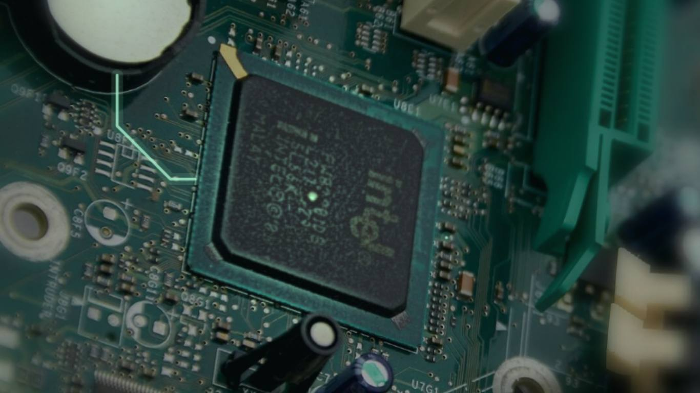

קודם, מוצאים את התקלה.First, find the fault.
לוח, זיכרון, דיסק וספק כוח נבדקים אחד אחד.Board, memory, drive and power supply, checked one by one.
כמה אפשרויות, ואתם בוחרים.A few options, and you choose.
תיקון, שדרוג או החלפה.Repair, upgrade or replace.
עבודה על הלוח.Work on the board.
מסכים, מקלדות, זיכרון, SSD ולוחות.Screens, keyboards, memory, SSDs and boards.
והמחשב עולה.And it boots.
צפצוף קצר אחד, ומסך הפתיחה.One short beep, then the start screen.